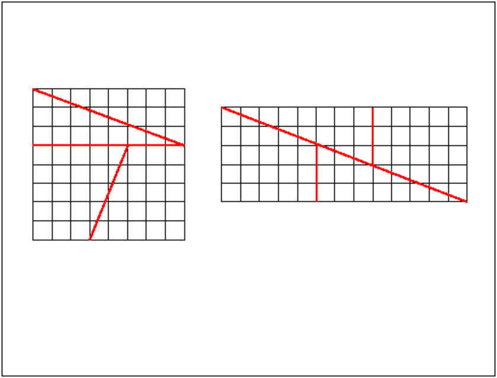
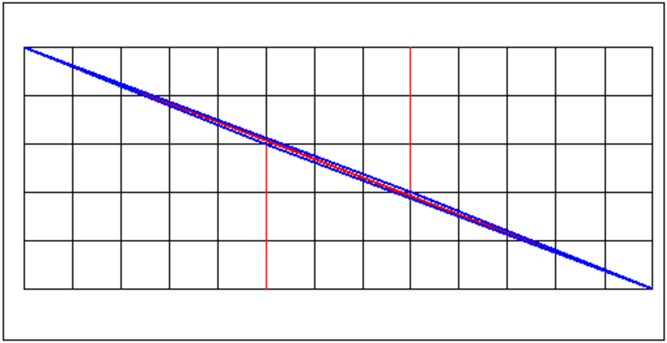
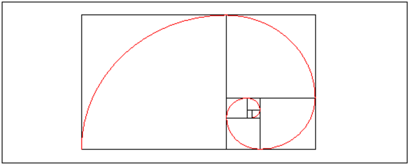
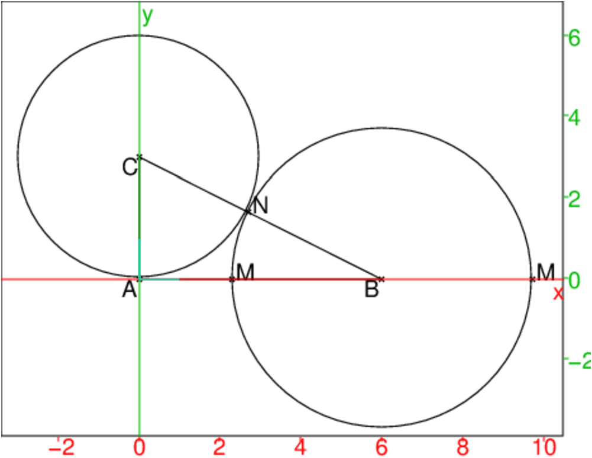
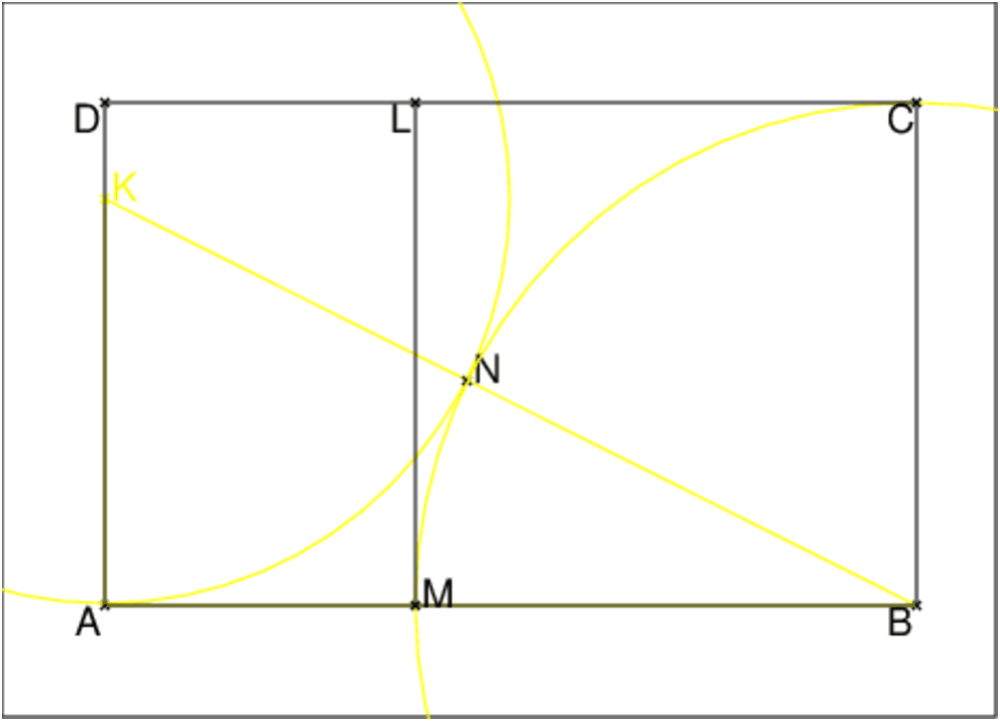
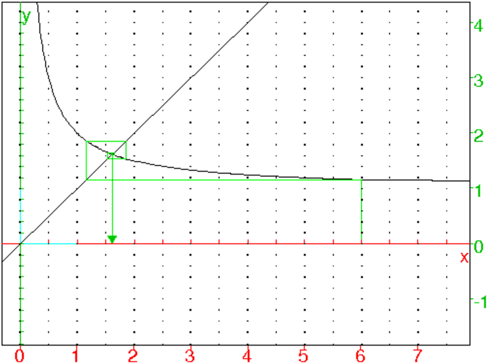

Chapitre 2 La suite de Fibonacci et le nombre d’or
2.1 Un exercice pour commencer
De combien de façons peut-on vider un tonneau de n litres avec un pot de
1 litre et un pot de 2 litres ? (2 façons sont identiques si la suite des
prélèvements sont identiques par exemple pour n=3 on a (1,1,1), (1,2) et
(2,1) soit 3 façons).
Soit u(n) le nombre de façons de vider un tonneau de n litres avec un
pot de 1 litre et un pot de 2 litres.
On a :
u(0)=1 il y a une façon de vider un tonneau vide !
u(1)=1
u(2)=2
u(3)=3
Soit un tonneau de n litres. Quand on a prélevé 1 litre, il reste à
vider un tonneau de n−1 litres (cela se termine donc de u(n−1) façons)
et quand on a prélevé 2 litres, il reste à vider un tonneau de n−2
litres (cela se termine donc de u(n−2) façons)
Donc :
u(n)=u(n−1)+u(n−2) avec u(0)=u(1)=1
On doit donc étudier cette suite récurrente qui s’appelle la suite de
Fibonacci
2.2 La suite de Fibonacci
2.2.1 La définition
La suite de Fibonacci est la suite u définie par :
u0=1
u1=1
un=un−1+un−2 pour n>1
2.2.2 Le programme avec Xcas
Il ne faut surtout pas écrire un programme récursif car sinon on calcule
les mêmes termes plusieurs fois :
Pour avoir un :
Fibonacci(n):={
local a,b,c,k;
si n==0 ou n==1 alors
retourne 1;
fsi;
a:=1;
b:=1;
pour k de 2 jusque n faire
c:=a+b;
a:=b;
b:=c;
fpour;
retourne c;
}:;
On tape :
Fibonacci(10)
On obtient :
89
Pour avoir les n premiers termes (le premier terme est u0):
Fibonasuite(n):={
local a,b,c,L,k;
L:=NULL;
si n<=0 alors retourne L;fsi;
L:=L,1;
si n==1 alors retourne L;fsi;
L:=L,1;
si n==2 alors retourne L; fsi;
a:=1;
b:=1;
pour k de 3 jusque n faire
c:=a+b;
L:=L,c;
a:=b;
b:=c;
fpour;
retourne L;
}:;
On tape :
Fibonasuite(11)
On obtient la suite des 11 premiers termes de la suite de Fibonnacci :
1,1,2,3,5,8,13,21,34,55,89
2.2.3 Le programme récursif avec Xcas
Fibonarec(n):={
si (n==0 or n==1) alors retourne 1 fsi;
retourne Fibonarec(n-2)+Fibonarec(n-1);
}:;
ou encore une écriture récursive avec un when :
Fibonawhen(n):={
when(n==0 or n==1,1,Fibonawhen(n-2)+Fibonawhen(n-1));
}:;
Que faut-il calculer pour calculer Fibonarec(5) ?
Il faut calculer Fibonarec(3) et Fibonarec(4).
Pour calculer Fibonarec(3), il faut calculer Fibonarec(1) et Fibonarec(2).
Pour calculer Fibonarec(2), il faut calculer Fibonarec(0) et Fibonarec(1).
Pour calculer Fibonarec(4), il faut calculer Fibonarec(2) et Fibonarec(3) donc
calculer Fibonarec(2) 2 fois et Fibonarec(3) 1 fois
Donc pour calculer Fibonarec(5) :
Fibonarec(2) doit être calculer 3 fois, Fibonarec(3) doit être
calculer 2 fois et Fibonarec(4) doit être calculer 1 fois.
Que faut-il calculer pour calculer Fibonarec(6) ?
Il faut calculer Fibonarec(4) et Fibonarec(5).
Donc pour calculer Fibonarec(6) :
Fibonarec(5) doit être calculé 1 fois
Fibonarec(4) doit être calculé 1 fois.
Fibonarec(2) doit être calculé 2+3=5 fois, Fibonarec(3) doit être
calculé 2+1=3 fois et Fibonarec(4) doit être calculé 2 fois.
On cherche vn le nombre de fois qu’il faut calculer
Fibonarec(2) pour calculer Fibonarec(n).
On a :
v2=1, v3=1, v4=2, v5=3 et
puisque pour calculer Fibonarec(n), il faut calculer Fibonarec(n-2) et
Fibonarec(n-1), on a :
vn=vn−2+vn−1
Donc vn est la suite de Fibonacci commencant à n=2 :
v2=1,v3=1,vn=vn−2+vn−1 i.e. vn=un−2
On cherche wn le nombre de fois qu’il faut
calculer Fibonarec(p) pour calculer Fibonarec(n) lorsque p est fixé et
vérifie 2≤ p≤ n.
On a :
wp=1, wp+1=1 et
puisque pour calculer Fibonarec(n), il faut calculer Fibonarec(n-2) et
Fibonarec(n-1), on a : wn=wn−2+wn−1
Donc wn=vn+2−p=un−p
Pour vérifier, on cherche le temps mis pour calculer u21,u22,u23
avec la fonction récursive Fibonarec(22)
Fibonarec(21), Fibonarec(22) et Fibonarec(23).
On tape :
time(Fibonarec(21))
On obtient : [1.75,1.802534401]
On tape :
time(Fibonarec(22))
On obtient : [2.79,2.825411609]
On tape :
time(Fibonarec(23))
On obtient : [4.59,4.614912788]
On a : 1.75+2.79 renvoie 4.54 qui est proche de 4.59
et 1.802534401+2.825411609 renvoie 4.62794601 qui est proche de
4.614912788
On modifie Fibonasuite en Fibonarectime qui donnera le temps mis
pour calculer Fibonarec(0)...Fibonarec(n) en mettant comme
4 premiers termes 0,0,0.00022,0.0003 (car le temps mis
pour calculer Fibonarec(2) est environ 0.00022 et le temps mis
pour calculer et Fibonarec(3) est environ 0.0003:
Fibonarectime(n):={
local a,b,c,L,k;
L:=0,0;
si n<=1 alors retourne L;fsi;
L:=L,0.00022;
si n==2 alors retourne L;fsi;
L:=L,0.0003;
si n==3 alors retourne L; fsi;
a:=0.00022;
b:=0.0003;
pour k de 4 jusque n faire
c:=a+b;
L:=L,c;
a:=b;
b:=c;
fpour;
retourne L;
}:;
On tape :
T:=Fibonarectime(24)
T[21],T[22],T[23],T[24]
On obtient :
1.82278,2.94932,4.7721,7.72142
Peut-on espérer calculer Fibonarec(30) ?
On tape :
T:=Fibonarectime(30)
T[30]
On obtient :
138.55526
cela fait un temps de 138.55526 secondes soit plus de 2 minutes !
Je teste en tapant :
time(Fibonarec(30))
On obtient :
[141.16,142.640424131]
Le premier nombre est le temps CPU (temps mis par le processeur pour faire
uniquement ces calculs, en seconde), le deuxième nombre est le temps mis pour
faire le calcul comme si on chronomètrait.
La suite de Fibonnacci vérifie :
En effet :
1*2−1=1, 3*1−22=−1, 5*2−32=1
et on a :
un+1.un−1−un2=un.un−1+un−12−un2=un(un−1−un)+un−12
Donc :
un+1.un−1−un2=−un.un−2+un−12.
On a par exemple :
5*13−82=1
Cela conduit au paradoxe suivant :
Soit un carré de côté 8 unités. 0n le découpe en 4 morceaux et on
dispose ces 4 morceaux comme ci dessous (on pourrait faire la même chose avec
un carré de côté un des termes un de la suite de Fibonacci puis faire
le découpage en utilisant les 2 termes précedents un−2 et un−1 ):

Le carré a comme surface 64 carrés alors que le rectangle est composé de
5*13=65 carrés. D’où vient le carré supplémentaire ?
Le carré supplémentaire est l’aire du parallélogramme bleu !!!!

En effet les bords des 4 morceaux ne suivent pas la diagonale du rectangle qui
a comme pente −5/13 ce qui est différent de -2/5 et de -3/8.
Selon la longueur du carré initial il peut soit y avoir un petit carré en
trop soit en manquer 1 puisque un+1.un−1−un2=(−1)n−1.
2.3 La suite de Fibonacci et le triangle de Pascal
2.3.1 Le triangle de Pascal
Pour avoir les premières valeurs du triangle de Pascal, on tape :
A:=makemat((j,k)->comb(j,k),11,11)
On obtient :
(
| 1 | 0 | 0 | 0 | 0 | 0 | 0 | 0 | 0 | 0 | 0 |
| 1 | 1 | 0 | 0 | 0 | 0 | 0 | 0 | 0 | 0 | 0 |
| 1 | 2 | 1 | 0 | 0 | 0 | 0 | 0 | 0 | 0 | 0 |
| 1 | 3 | 3 | 1 | 0 | 0 | 0 | 0 | 0 | 0 | 0 |
| 1 | 4 | 6 | 4 | 1 | 0 | 0 | 0 | 0 | 0 | 0 |
| 1 | 5 | 10 | 10 | 5 | 1 | 0 | 0 | 0 | 0 | 0 |
| 1 | 6 | 15 | 20 | 15 | 6 | 1 | 0 | 0 | 0 | 0 |
| 1 | 7 | 21 | 35 | 35 | 21 | 7 | 1 | 0 | 0 | 0 |
| 1 | 8 | 28 | 56 | 70 | 56 | 28 | 8 | 1 | 0 | 0 |
| 1 | 9 | 36 | 84 | 126 | 126 | 84 | 36 | 9 | 1 | 0 |
| 1 | 10 | 45 | 120 | 210 | 252 | 210 | 120 | 45 | 10 | 1 |
)
On peut aussi utiliser le tableur et la relation :
pour n ∈ ℕ :
Cn0=1, Cnn=1 et Cnp=Cn−1p+Cn−1p−1 pour 0<p<n.
On ouvre un niveau tableur et on choisit 22 lignes et 11 colonnes.
On met 1 dans A0.
Puis, on copie A0 vers le bas pour avoir des 1 dans la colonne A.
Dans B1 on met =B0+A0 formule que l’on copie vers le bas et vers la
droite.
On copie alors vers le bas la formule située dans C1,...K1.
Remarque On peut mettre idn(11) dans A0, et si on a
coché sur Distribuer, cela a pour effet de remplir 11 lignes et 11
colonnes avec la matrice identité d’ordre 11. Mais cela est inutile car les
1 de la diagonale sont recalculés quand on copie vers la droite !
On obtient :
(
| 1 | 0 | 0 | 0 | 0 | 0 | 0 | 0 | 0 | 0 | 0 |
| 1 | 1 | 0 | 0 | 0 | 0 | 0 | 0 | 0 | 0 | 0 |
| 1 | 2 | 1 | 0 | 0 | 0 | 0 | 0 | 0 | 0 | 0 |
| 1 | 3 | 3 | 1 | 0 | 0 | 0 | 0 | 0 | 0 | 0 |
| 1 | 4 | 6 | 4 | 1 | 0 | 0 | 0 | 0 | 0 | 0 |
| 1 | 5 | 10 | 10 | 5 | 1 | 0 | 0 | 0 | 0 | 0 |
| 1 | 6 | 15 | 20 | 15 | 6 | 1 | 0 | 0 | 0 | 0 |
| 1 | 7 | 21 | 35 | 35 | 21 | 7 | 1 | 0 | 0 | 0 |
| 1 | 8 | 28 | 56 | 70 | 56 | 28 | 8 | 1 | 0 | 0 |
| 1 | 9 | 36 | 84 | 126 | 126 | 84 | 36 | 9 | 1 | 0 |
| 1 | 10 | 45 | 120 | 210 | 252 | 210 | 120 | 45 | 10 | 1 |
| 1 | 11 | 55 | 165 | 330 | 462 | 462 | 330 | 165 | 55 | 11 |
| 1 | 12 | 66 | 220 | 495 | 792 | 924 | 792 | 495 | 220 | 66 |
| 1 | 13 | 78 | 286 | 715 | 1287 | 1716 | 1716 | 1287 | 715 | 286 |
| 1 | 14 | 91 | 364 | 1001 | 2002 | 3003 | 3432 | 3003 | 2002 | 1001 |
| 1 | 15 | 105 | 455 | 1365 | 3003 | 5005 | 6435 | 6435 | 5005 | 3003 |
| 1 | 16 | 120 | 560 | 1820 | 4368 | 8008 | 11440 | 12870 | 11440 | 8008 |
| 1 | 17 | 136 | 680 | 2380 | 6188 | 12376 | 19448 | 24310 | 24310 | 19448 |
| 1 | 18 | 153 | 816 | 3060 | 8568 | 18564 | 31824 | 43758 | 48620 | 43758 |
| 1 | 19 | 171 | 969 | 3876 | 11628 | 27132 | 50388 | 75582 | 92378 | 92378 |
| 1 | 20 | 190 | 1140 | 4845 | 15504 | 38760 | 77520 | 125970 | 167960 | 184756 |
| 1 | 21 | 210 | 1330 | 5985 | 20349 | 54264 | 116280 | 203490 | 293930 | 352716 |
)
On a ainsi les coefficients binomiaux utiles pour le développement de
(1+x)n pour n=0..21.
2.3.2 La somme des diagonales montantes
Lorsqu’on fait la somme des diagonales montantes du triangle de Pascal on obtient la suite de Fibonacci.
Par exemple :
(
)
(
| 1 | | 0 | | 0 | | 0 | | 0 | | 0 |
| | ↗ | | ↗ | | ↗ | | ↗ | | ↗ |
| 1 | | 1 | | 0 | | 0 | | 0 | | 0 |
| | ↗ | | ↗ | | ↗ | | ↗ | | ↗ |
| 1 | | 2 | | 1 | | 0 | | 0 | | 0 |
| | ↗ | | ↗ | | ↗ | | ↗ | | |
| 1 | | 3 | | 3 | | 1 | | 0 | | 0 |
| | ↗ | | ↗ | | ↗ | | | | |
| 1 | | 4 | | 6 | | 4 | | 1 | | 0 |
| | ↗ | | ↗ | | | | | | |
| 1 | | 5 | | 10 | | 10 | | 5 | | 1 |
| | ↗ | | | | | | | | |
| 1 | | 6 | | 15 | | 20 | | 15 | | 6 |
)
On tape :
L:=sum(A[j-k, k],k=0..j)$(j=0..10)
On obtient :
1,1,2,3,5,8,13,21,34,55,89
Pour le montrer on utilise les relations pour n ∈ ℕ et p ∈ ℕ :
Cn0=1, Cnn=1, Cnp=0 si p>n et Cnp=Cn−1p+Cn−1p−1 pour
0<p≤ n.
On tape :
simplify(comb(j-1,k-1)+comb(j-1,k)-comb(j,k))
On obtient :
0
Soit an la suite définie par la somme des diagonales montantes du
triangle de Pascal.
On a donc :
a0=1, a1=1 et pour n>1:
an=∑p=0floor(n/2)comb(n-p,p)=1+∑p=1floor(n/2)comb(n-p,p)
an=1+∑p=1floor(n/2)comb(n-p-1,p-1)+∑p=1floor(n/2)comb(n-p-1,p)
On a pour tout n : floor(n/2)-1=floor((n-2)/2)).
On a si n=2k, on a floor(n/2)=floor((n-1)/2)+1=k:
1+∑p=1floor(n/2)comb(n-p-1,p)=
∑p=0floor((n-1)/2)comb(n-1-p,p)+comb(2k-1-k,k)=an−1
car comb(2k-1-k,k)=0
∑p=1floor(n/2)comb(n-p-1,p-1)=
∑p=0floor((n-2)/2)comb(n-2-p,p)=an−2
car floor(n/2)-1=floor((n-2)/2)
On a si n=2k+1 alors floor(n/2)=floor((n-1)/2)=k :
1+∑p=1floor(n/2)comb(n-p-1,p)=
∑p=0floor((n-1)/2)comb(n-1-p,p)=an−1
∑p=1floor(n/2)comb(n-p-1,p-1)=
∑p=0floor((n-2)/2)comb(n-2-p,p)=an−2
car floor(n/2)-1=floor((n-2)/2)
Donc :
a0=1, a1=1 et pour n>1 on a
an=an−1+an−2
an est donc la suite de Fibonacci.
On tape :
L1:=0,sum(A[j-k-1,k-1],k=1..j-1)$(j=1..10)
On obtient :
0,0,1,1,2,3,5,8,13,21,34
On tape :
L2:=1,sum(A[j-k-1,k],k=0..j-1)$(j=1..10)
On obtient :
1,1,1,2,3,5,8,13,21,34,55
On tape :
[L1]+[L2]
On obtient :
[1,1,2,3,5,8,13,21,34,55,89]
On tape :
simplify(comb(j-1,k-1)+comb(j-1,k)-comb(j,k))
On obtient :
0
2.4 Le code de Fibonacci
À partir de "sa" suite Fibonacci a fabriqué un code qui permet d’écrire
tous les entiers avec des 0 et des 1. Pour cela, si un est la suite de
Fibonacci u0=u1=1 et pour n≥2 un=un−2+un−1,
le code de 0 est 0 et pour n>0 le code des nombres un est 1 suivi de n−1 zéros.
On a ainsi :
0 a pour code 0
1 a pour code 1
2 a pour code 10
3 a pour code 100
4 a pour code 101 car 4=3+1
5 a pour code 1000
6 a pour code 1001 car 6=5+1
7 a pour code 1010 car 7=5+2
8 a pour code 10000
etc...
On remarquera que dans ce code il n’y a jamais deux 1 qui se suivent, en effet :
un−1+un−2=un.
Par exemple le nombre :
u1+u2+u3+u4=1+2+3+5=11 a comme code 1010 car 11=8+3.
Exercice
Écrire un programme qui renvoie le code de Fibonacci d’un entier n≥ 108.
On remarquera que u38<108<u39.
On construit la liste des 40 premiers termes de un pour n=0,1..39.
Le codage
On utilise le programme vu précédemment :
Fibonasuite(n):={
local a,b,c,L;
L:=NULL;
si n<=0 alors retourne L;fsi;
L:=L,1;
si n==1 alors retourne L;fsi;
L:=L,1;
si n==2 alors retourne L; fsi;
a:=1;
b:=1;
pour k de 3 jusque n faire
c:=a+b;
L:=L,c;
a:=b;
b:=c;
fpour;
retourne L;
}:;
On écrit le code d’un nombre n au moyen d’une chaîne de caractères :
c’est string qui transforme l’écriture d’un nombre en une chaîne
de caractères
codefib(n):={
local fib,cod,p;
si n>10^8 alors retourne "l'entier doit etre <10^8" fsi;
si (n==0 or n==1) alors return n fsi;
fib:=Fibonasuite(40);
cod:=0;
repeter
p:=2;
tantque n>=fib[p] faire p:=p+1 ftantque;
// fib[p-1]<=n<fib[p]
cod:=10^(p-2)+cod;
n:=n-fib[p-1];
jusqua n==0;
retourne string(cod);
}:;
On tape :
codefib(n)$(n=0..20)
On obtient une suite de chaînes :
0,1,10,100,101,1000,1001,1010,10000,10001,10010,10100,10101,
100000,100001,100010,100100,100101,101000,101001,101010
Le décodage
On donne une chaîne de caractères L de 1 et de zéro qui est le code de
Fibonacci d’un nombre n et on obtient le nombre n codé par L.
On remarquera que le décodage ci-dessous ne vérifie pas que L est bien un
code de Fobonacci : il peut y avoir 2 "1" à la suite (par ex decodefib("11")
renverra 3) et les chiffres autres que "1" seront considérés comme des "0"
(par ex decodefib("15") renverra 2).
On tape :
decodefib(L):={
local k,n,s,fib;
fib:=Fibonasuite(40);
s:=dim(L);
si s==1 alors return expr(L[0]); fsi;
n:=0;
pour k de 0 jusque s-1 faire
si L[k]=="1" alors n:=n+fib[s-k];fsi;
fpour;
return n;
}:;
On tape :
decodefib("101010"),decodefib("10101")
On obtient :
20,12
2.5 Le nombre d’or
Les quotients des termes successifs de la suite de Fibonnacci est la suite
vn=un+1/un pour n ≥ 0
Cette suite converge vers
1+√5/2 : c’est le nombre d’or qui est noté Φ.
En effet, on a v0=1 et vn=1+un−1/un=1+1/vn−1 donc
v1=2, v2=3/2, v3=5/3.
Montrons par reécurrence que 1 ≤ vn ≤ 2 pour tout n :
1≤ v0=1<2
si 1 ≤ vn−1<2 alors 1/2≤ 1/vn−1≤ 1
donc 1≤ 1+1/2 ≤ vn≤ 1+1=2
Étude du signe de vn−vn−1 :
vn−vn−1=1/vn−1−1/vn−2=vn−2−vn−1/vn−1vn−2
Donc vn−vn−1 est du signe opposé à celui de vn−1−vn−2.
Donc v2n−v2n−2 a le mme signe que v2−v0=1/2>0 et
v2n+1−v2n−1 a le même signe que v3−v1=−1/3<0
La suite v2n est convergente vers 1≤ a≤ 2 car croissante et
majorée.
v2n+1 est convergente vers 1≤ b≤ 2 car décroissante et
minorée.
On doit avoir a=1+1/b et b=1+1/a donc ab=b+1=a+1 donc a=b
Donc v converge vers a=b=φ qui vérifie :
φ=1+1/φ ou encore φ2−φ−1=0 et 1≤ φ ≤ 2.
donc φ=1+√5/2
Le nombre d’or est :
2.5.1 Propriétés du nombre d’or
Si un réctangle est tel que le rapport de la longueur L à la largeur l
soit φ alors :
On tape :
spiror(a,b,n):={
local au,r,L;
L:=NULL;
si n==0 alors retourne L,segment(a,b);fsi;
au :=(1+sqrt(5))/2;
L:=L,rectangle(a,b,au-1);
r:=(b-a)*(au-1);
L:=L,affichage(cercle(a+r,r,pi/2,pi),1);
retourne L,spiror(a+r*(1+i),a+r,n-1);
}:;
puis on tape :
spiror(0,1/2+sqrt(5)/2,7)
On obtient :

2.6 Un exercice niveau trousième
On veut construire un rectangle d’or i.e. un rectangle tel que :
longueur/largeur =1+√5/2=Φ.
Tout d’abord étant donné un segment AB, on construit un point M tel que
AB/MB=MB/MA=1+√5/2=Φ
Soient a un nombre réel positif et ABC un triangle rectangle en A tel
que AB=a et AC=a/2.
Soit N intersection du cercle de centre C et de rayon AC.
Soit M intersection du cercle de centre B et de rayon BN.

Calculer les longueurs BC, BN, BM et AM.
Montrer que M partage BA selon le nombre d’or i.e. :
En déduire une construction d’un rectangle d’or avec Xcas
Solution
D’après le théorème de Phytagore on a :
BC2=AB2+AC2=a2+a2/4=5a2/4
Donc :
BC=a√5/2
BN=BM=BC−CN=BC−a/2=a(√5−1/2
AM=AB−BM=a−a(√5−1/2=a(3−√5/2
On a donc :
Remarque
On peut se servir de Xcas pour faire les calculs.
On peut stocker les valeurs dans des variables.
On tape :
a^2+a^2/4
On obtient BC2 :
5*a^2/4
On tape :
factor(sqrt(5*a^2/4))
On obtient BC :
sqrt(5)*a/2
On tape :
factor(a*sqrt(5)/2-a/2)
On obtient CN et BM :
(sqrt(5)-1)*a/2
On tape :
factor(a-(sqrt(5)-1)*a/2)
On obtient AM :
(-(sqrt(5))+3)*a/2
On tape :
normal((sqrt(5)-1)*a/2/((-(sqrt(5))+3)*a/2))
On obtient BM/AM :
(sqrt(5)+1)/2
On tape :
normal(a/((sqrt(5)-1)*a/2))
On obtient AB/BM :
(sqrt(5)+1)/2.
On peut stocker les valeurs dans des variables pour que les calculs soient plus
lisibles.
On tape :
BC:=factor(sqrt(a^2+a^2/4))
On obtient BC :
sqrt(5)*a/2
On tape :
BM:=factor(BC-a/2)
On obtient CN et BM :
a*(sqrt(5)-1)/2
On tape :
AM:=factor(a-BM)
On obtient AM :
a*(-(sqrt(5))+3)/2
On tape :
normal(BM/AM)
On obtient BM/AM :
(sqrt(5)+1)/2
On tape :
normal(a/BM)
On obtient AB/BM :
(sqrt(5)+1)/2.
Construction du rectangle d’or
A:=point(0);
B:=point(4);
K:=point(0,2,affichage=3);
triangle(A,B,K,affichage=3);
cercle(K,2,affichage=3);
N:=inter(cercle(K,2),segment(K,B));
l:=longueur(K,B);
cercle(B,l-2,affichage=3);
M:=inter(cercle(B,l-2),segment(A,B));
rectangle(A,B,(l-2)/4,D,C);
L:=point(6-l,l-2);
segment(M,L);
On obtient :

Les rectangles ABCD et AMLD sont des rectangles d’or et MBCL est un
carré.
2.7 Un exercice niveau terminale
On cosidère la fonction f definie sur ℝ* par :
On note f@@ n=f∘ f..∘ f (On compose f, n fois)
-
Calculer :
f@@ 2=f∘ f, f@@ 3=f∘ f∘ f, f@@ 4=f∘ f∘ f∘ f
- Trouver la valeur de f@@ n en fonction de n.
- Résoudre, lorsqu’on utilise n traits de fractions, l’équation
d’inconnue x :
- Touver la limite lorsque n tends vers +∞ de
lorsque a>0 et lorsqu’on utilise n traits de fractions.
2.7.2 La solution avec Xcas
-
On définit la fonction f, on tape :
f(x):=(x+1)/x
On calcule f@@ 2=f(f(x)), on tape :
normal((f@@2)(x))
On obtient :
(2*x+1)/(x+1)
On calcule f@@ 3=f(f(f(x))), on tape :
normal((f@@3)(x))
On obtient :
(3*x+2)/(2*x+1)
On calcule f@@ 4, on tape :
normal((f@@4)(x))
On obtient :
(5*x+3)/(3*x+2)
- On suppose que :
f@@ n=anx+bn/cnx+dn
On cherche une relation de récurrence entre les différents coefficients.
On définit la fonction g, on tape :
g(x,a,b,c,d):=(a*x+b)/(c*x+d)
On a :
(f@@ n+1)(x)=f(g(x,a,b,c,d))
On calcule f(g(x,a,b,c,d)) et on tape :
normal(f(g(x,a,b,c,d)))
On obtient :
(a*x+b+c*x+d)/(a*x+b)
donc :
cn+1=an, dn+1=bn
an+1=an+cn=an+an−1
bn+1=bn+dn=bn+bn−1
On sait que a1=1, b1=1 a0=c1=1 b0=d1=0
Donc si la suite de Fibonacci est la suite u définie par :
u0=1, u1=1
un=un−1+un−2 pour n>1:
Alors
f@@ n=anx+bn/cnx+dn
avec an=un, bn=cn=an−1, dn=an−2
- On résout l’équation d’inconnue x, avec 1 trait de fractions :
x=1+1/x
On tape :
normal(1+1/x)
On obtient : (x+1)/x
Donc f(x)=1+1/x
Il faut donc résoudre f(x)=x, on tape :
solve(x=f(x),x)
On obtient : [1/2*(1-sqrt(5)),1/2*(1+sqrt(5))]
On reconnait le nombre d’or et l’inverse de son opposé.
On résout l’équation d’inconnue x, avec 2 traits de fractions :
x=1+ 1/1+ 1/x
On tape :
normal(1+1/(1+1/x))
On obtient : (2*x+1)/(x+1)
On reconnait f(f(x)) ou bien
puisque f(x)=1+1/x, on a :
1+ 1/1+ 1/x=1+1/f(x)=f(f(x))
.
Il faut donc résoudre f(f(x))=x, on tape :
solve(f(f(x))=x,x)
On obtient :
[1/2*(1-sqrt(5)),1/2*(1+sqrt(5))]
qui sont les mêmes solutions qur f(x)=x.
On doit résoudre l’équation avec n traits de fractions :
(f@@ n)(x)=x
Comme (f@@ n) est une fonction homographique (i.e.
(f@@ n)(x) est de la forme (a*x+b)/(c*x+d))),
cette équation est une équation du 2-nd degré donc admet au plus 2
solutions. Les 2 solutions de f(x)=x sont aussi solutions de
(f@@ n)(x)=x donc (f@@ n)(x)=x a les mêmes solutions que
f(x)=x.
- Chercher la limite lorsque le nombre de traits tend vers l’infini de :
revient à chercher la limite de la suite des itérées de f définit
par : u0=a>0, un=f(un−1) pour n>0.
On a en effet (avec n traits de fractions) :
.
Avec Xcas, on tape dans un niveau de géométrie 2-d :
supposons(a=[6.0,0,9,0.1])
plotseq(1+1/x,[a,0,9],5)
On obtient :

Montrons que la suite un converge vers
φ=1+√5/2 qui est la
solution positive de l’équation f(x)=x.
Puisque a>0, on a u1=b=1+1/a>1>0 et pour tout n>0 un>1>0.
Si u0=a>φ alors b=u1=1+1/a<1+1/φ=φ et
si u0=a<φ alors b=u1=1+1/a>1+1/φ=φ
De même si c=un>φ alors d=un+1=1+1/c<φ et un+2=1+1/c>φ.
Suupposons par exemple que a=u0>φ
Alors pour tout n∈ ℕ on a u2n>φ et u2n+1<φ
On a :
un+1−un=f(un)−f(un−1)=1/un−1/un−1=(un−1−un)/(un−1un)
Comme (un−1un)>0 on en déduit que un+1−un et un−un−1−
sont de signe opposé donc que un+1−un et un−1−un−2 et sont de
même signe.
Ainsi u2n−u2n−2 a le même signe que u2−u0 et
u2n+1−u2n−1 a le même signe que u3−u1.
Signe de u2−u0 :
u2−u0=(2a+1)/(a+1)−a=(−a2+a+1)/(a+1)<0 puisque a>φ et que φ est la
plus grande racine de −x2+x+1
Signe de u3−u1 :
u3−u1=(2b+1)/(b+1)−b=(−b2+b+1)/(b+1)>0 puisque 0<b<φ et que φ est la
plus grande racine de −x2+x+1 et que 0 se trouve entre les racines.
On a donc montrer que u2n est décroissante et minorée donc est
convergente vers la solution positive de f(f(x))=x qui est φ
et que u2n+1 est croissante et majorée donc est convergente
vers la solution positive de f(f(x))=x qui est φ .
Donc un converge vers φ.
Remarque Lorsque a=1, un est le quotient de de 2 termes consécutifs
de la suite de Fibonacci.
2.8 Deux suites convergentes vers le nombre d’or L
2.8.1 u0=1 et un+1=√1+un pour n∈ ℕ
Soit la suite u définie par :
u0=1 et un+1=√1+un pour n∈ ℕ.
Calculer une valeur approché de u5.
Montrer que u est à terme positif et est croissante (on montrera que
un+1−un>0 pour n∈ ℕ).
Soit L la racine positive de x2−x−1=0.
Montrer que un<L pour n∈ ℕ.
En déduire que u converge vers L=1+√5/2
On tape :
sqrt(1+sqrt(1+sqrt(1+sqrt(1+sqrt(2.)))))
On obtient :
1.61612120651
ou bien, on tape :
1
sqrt(1.+ans())
On valide la dernière ligne 5 fois et on obtient :
1.61612120651
ou bien, on utilise le tableur...
On tape :
mult_conjugate(sqrt(1+u1)-sqrt(1+u0))
On obtient apres simplification du numérateur :
(-u0+u1)/(sqrt(1+u1)+sqrt(1+u0))
ce qui veut dire que u2−u1 a la même signe que u1−u0=√2−1>0.
Le même calcul montre que un+1−un a la même signe que un−un−1 qui
a la même signe que un−1−un−2 etc..qui a la même signe que
u1−u0.
Donc un+1−un>0 pour n∈ ℕ. La suite u est donc croissante.
On tape :
solve(x^2-x-1)
On obtient :
[1/2*(1-(sqrt(5))),1/2*(1+sqrt(5))]
Donc L=1/2*(1+√5)≃ 1.61803398875 et L=√1+L.
On tape :
mult_conjugate(sqrt(1+un)-sqrt(1+L))
On obtient :
(-L+un)/(sqrt(1+un)+sqrt(1+L))
Donc un+1−L a le même signe que un−L qui
a la même signe que un−1−L etc..qui a la même signe que
u0−L=1/2*(1−sqrt(5))<0. Donc u est majorée par L.
La suite u est croissante et major'e donc u est convergente et sa limite
a vérifie a=√1+a. Donc a=L.
La convergence de un n’est pas très rapide puisque u5 donne la
valeur de L avec seulement 2 décimales exactes.
2.8.2 u0=2 et un+1=un2+1/2un−1 pour n∈ ℕ
Soit la suite u définie par :
u0=2 et un+1=un2+1/2un−1 pour n∈ ℕ.
En considérant la fonction g définie par g(x)=x2−x−1, montrer que
un est la suite de la méthode de Newton pour trouver une valeur
approchée de L:=1/2*(1+sqrt(5)) qui est le zéro de g dans
[1,2], c’est à dire que un+1=un−g(un/g′(un).
Montrer que un+1−L=(un−L)2/2un−1.
Montrer par récurrence que un>L pour tout n∈ ℕ
Montrer que u est décroissante et converge vers L
Calculer une valeur approché de u5.
On tape :
g(x):=x^2-x-1
f(x):=x-g(x)/g’(x)
normal(f(x))
On obtient :
(x^2+1)/(2*x-1)
Donc un+1=f(un).
On tape :
L:=1/2*(1+sqrt(5))
normal(f(L))
On obtient :
1/2*(1+sqrt(5))
Donc f(L)=L
On tape pour calculer un+1−L:
factor(f(un)-f(L))
On obtient :
(2*(un+(-(sqrt(5))-1)/2)^2)/(4*un-2)
On a u0=2>L et si un>L alors 2un−1>2L−1>0 donc puisque
un+1−L=(un−L)2/2un−1>0 on en déduit que un+1>L.
On tape pour avoir le signe de un+1−un :
normal(f(un)-un)
On obtient :
(-un^2+un+1)/(2*un-1)
Comme un>L un est à l’extérieur des racines de −x2+x+1 donc
−un2+un+1<0 et 2un−1>0 donc un+1−un<0 donc u est décroissante
et converge vers a la racine positive de f(x)−x.
On tape :
normal(solve(f(x)-x))
On obtient :
[(-(sqrt(5))+1)/2,(sqrt(5)+1)/2]
Donc a=L=(√5+1)/2
On tape :
(f@@5)(2.)
On obtient (avec 30 chiffres significatifs):
1.618033988749894848204586838338
On tape :
(f@@5)(2.)-(sqrt(5)+1)/2.
On obtient :
0.3972703518693015452053465054764e-26
La convergence de un est tres rapide puisque u5 donne la valeur de L
avec 26 décimales exactes.
2.9 Le nombre d’or et cos(π/5)
2.9.1 Calcul de cos(2π/5)
Soit z1=exp(i*2π/5).
z1=a+ib=cos(2π/5)+i*sin(2π/5) est la racine de
z5−1=0 qui vérifie a>0 et b>0.
Puisque z5−1=(z−1)(z4+z3+z2+z+1), z1=a+ib est la racine de
z4+z3+z2+z+1=(z+1/z)2+(z+1/z)−1=0.
On pose Z=z+1/z et on tape :
solve(Z^2+Z-1,Z)
On obtient :
[1/2*(-1-sqrt(5)),1/2*(-1+sqrt(5))]
Comme z1=a+ib est de module 1, on a 1/z1=a−ib et donc
z1+1/z1=2a=2cos(2π/5).
On a donc :
On tape :
normal(expand((1/4*(-1+sqrt(5)))^2))
On obtient :
(-sqrt(5)+3)/8
Donc :
2.9.2 Calcul de 2cos(π/5)
On a :
cos(2π/5)=2cos(π/5)2−1
Donc :
2cos(π/5)2=cos(2π/5)+1)=−1+√5/4+1
On tape :
normal(1/4*(-1+sqrt(5))+1)
On obtient :
(sqrt(5)+3)/4
Donc :
On tape :
normal(expand((1/4*(1+sqrt(5)))^2))
On obtient :
(sqrt(5)+3)/8
Donc :
Le nombre d’or est :
Donc